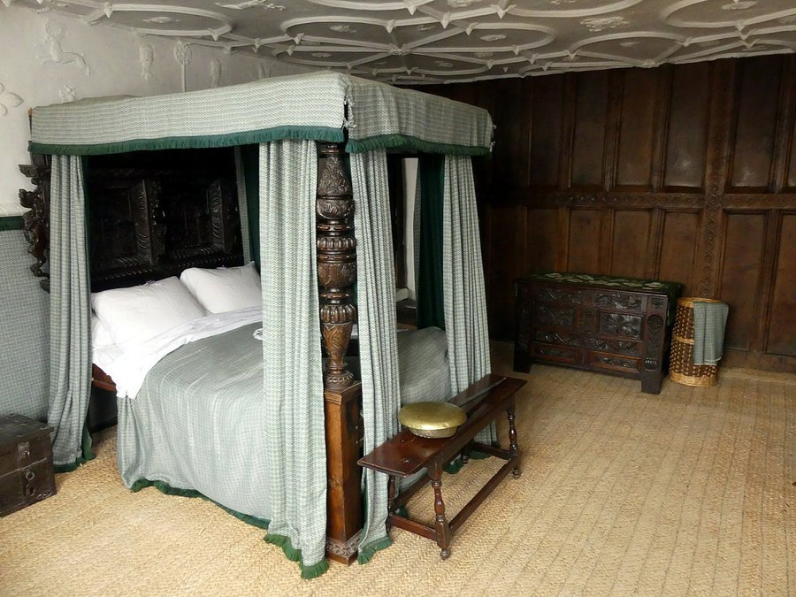

White Noise Machines and Focus: Do They Actually Help Concentration?
Millions of people run a white noise machine while they sleep or work. Here's what sound-masking research actually says about attention and focus, and where the evidence runs thin.

Photo: Alan Murray-Rust / Wikimedia Commons / CC BY-SA 2.0
Key takeaways
- White noise works mainly through auditory masking — it covers sudden, distracting sounds rather than making your brain "focus harder."
- Evidence for sleep is more consistent than evidence for daytime concentration.
- Some classroom and office research has even found steady background noise can slightly hurt performance on certain tasks.
- People who are easily distracted by unpredictable noise seem to benefit most; people who already work well in silence often don't.
- Pink and brown noise are close cousins of white noise. Most comparisons look at sleep, not concentration specifically.
- A steady sound is one tool among several. It doesn't replace fixing the actual source of distraction.
Short answer: white noise machines can help some people concentrate, mainly by drowning out unpredictable noise like a slamming door or a neighbor's television. The effect is real but narrow. For people already working in a reasonably quiet space, steady background sound sometimes does nothing for focus, and in a handful of studies it made performance slightly worse. It depends heavily on what kind of distraction you're actually fighting.
What is white noise, and why would it help you concentrate?
White noise contains every audible frequency at roughly equal intensity, which is why it sounds like a steady hiss or static rather than a tone or a tune. That flat, unchanging quality is the whole point. Brains are tuned to notice change, not steady states, so a continuous sound in the background quickly becomes something your attention tunes out. A sudden new sound, though, like a car door or a dog bark, has far less contrast against a steady hiss than it does against silence. That's auditory masking: the white noise doesn't erase the distracting sound, it just shrinks how sharply it stands out.
What does the actual research say about noise and focus?
This is where the picture gets messier than marketing for white noise machines would suggest. Studies on background sound and productivity, many done in open-plan offices and classrooms, have produced mixed results. Some find a modest benefit for simple, repetitive tasks. Others find no real change, and a few report that steady background noise makes tasks involving reading comprehension or verbal memory somewhat harder, not easier. Sample sizes in this research tend to be small, and results vary a lot depending on the specific task and the person doing it, so it's hard to draw one clean conclusion.
COMPLEX
The memory formula we rate highest in 2026
Masking noise handles one kind of distraction. Advanced Memory Complex pairs citicoline, bacopa and L-theanine with core B-vitamins for the nutrient side of attention, once sleep and your environment are already sorted.
See Today's Price →Does white noise help some people more than others?
It does seem to. People living in noisy, unpredictable environments, like a shared apartment, a house near traffic, or a busy household with kids, tend to report the biggest benefit, because there's more disruptive sound to mask in the first place. There's also a long-standing theory called stochastic resonance, which suggests mild background noise can improve attention in people whose baseline alertness runs low, including some people with ADHD. The research behind this idea is still preliminary and the effect sizes are inconsistent, so treat it as a plausible explanation rather than a settled fact. People who already concentrate well in silence generally don't gain much, and a few find any added sound mildly distracting instead.
Which type of noise works best: white, pink or brown?
The names describe where the sound's energy sits across the frequency spectrum. White noise spreads energy evenly and sounds like static or a hiss. Pink noise carries more energy at lower frequencies and sounds deeper and softer, closer to steady rainfall. Brown noise goes lower still, closer to a rumbling waterfall or ocean surf. Most of the comparative research looks at sleep rather than concentration, and there isn't strong evidence that any one of them reliably beats the others for focus. Personal preference does a lot of the work here. Try more than one and pay attention to which actually fades into the background for you instead of grabbing your attention.
Who should be careful with white noise machines?
Volume and placement matter most, especially for infants. Devices placed close to a crib and run at high volume for long stretches raise reasonable concerns about cumulative noise exposure, so keep the machine at a safe distance, use the lowest volume that still works, and ask a pediatrician about appropriate use for babies. For adults, a white noise machine also isn't a fix for an underlying sleep disorder. If you're dealing with ongoing insomnia or suspect something like sleep apnea, that's worth raising with a doctor rather than papering over it with background sound, since poor sleep is itself a major driver of the foggy, unfocused feeling people are often trying to mask in the first place. For more on that connection, see our guide to how sleep and memory consolidation work.
It's also worth separating two different problems people lump together: the noise itself, and the broader environment it comes from. If your workspace is genuinely loud and chaotic, see our breakdown of how noise pollution affects concentration, since masking a symptom with more sound isn't the same as addressing it. And if focus struggles extend well beyond noise, our wider list of science-backed ways to focus better covers the habits that tend to matter more than any single tool.
Frequently asked questions
Does white noise actually improve concentration?
For some people, yes, mainly by masking sudden distracting sounds. For people already working in a quiet space, or doing tasks that need careful reading or verbal memory, steady background noise doesn't reliably help and can occasionally hurt performance in small studies.
Is white noise better than complete silence for studying?
It depends on the person and the task. Complete silence works well for many people doing detail-heavy reading. White noise tends to help more in noisy, unpredictable environments, where it's masking real distractions rather than replacing silence that was already working fine.
Is it safe to use a white noise machine every night?
Generally yes, at a moderate volume and a reasonable distance from your ears. Device placement matters more for infants. Keep volume well below the level of loud conversation, and ask a pediatrician about safe use for babies.
What's the difference between white noise and pink noise for focus?
White noise has roughly equal energy across all audible frequencies and sounds like a hiss. Pink noise emphasizes lower frequencies and sounds deeper, closer to steady rainfall. Most research comparing them looks at sleep rather than concentration, and neither has strong evidence of being clearly better for focus.
Want a focus boost that goes deeper than a sound machine?
Background noise can mask distractions, but it won't close a nutrient gap. See the memory formulas our editors rate highest for 2026.
See the Top 5 Memory Formulas →Related: Noise pollution and focus · How to focus better · How to improve your memory · Best memory formulas of 2026